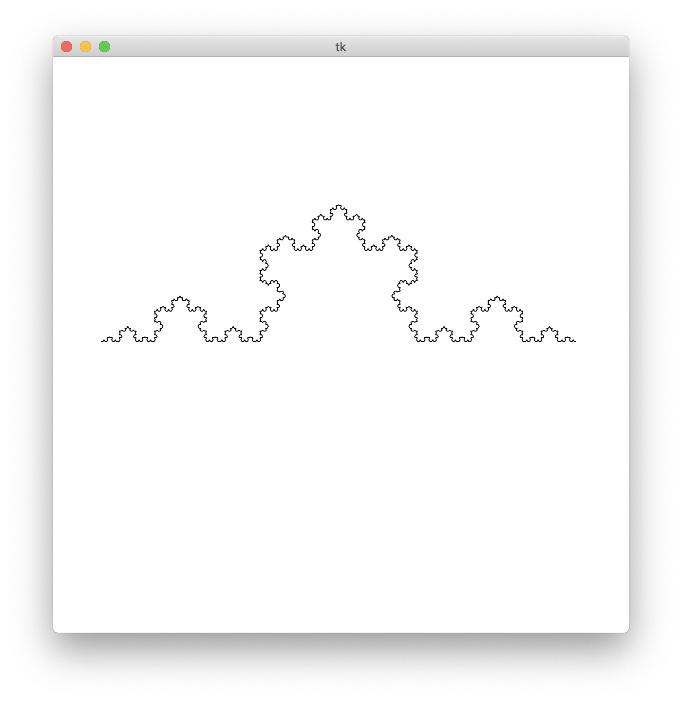
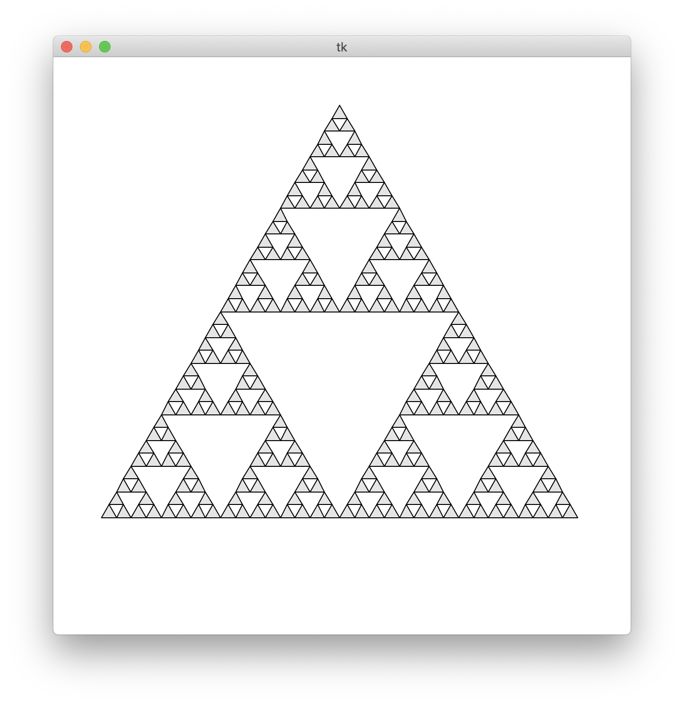
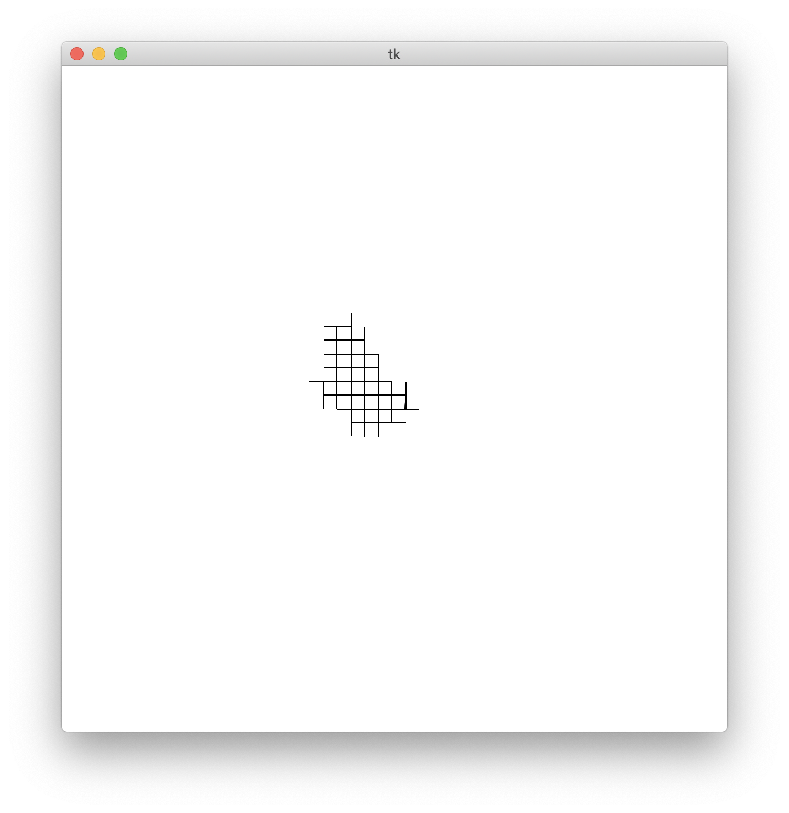

| 氏名 | 林橘平 |
|---|---|
| クラス | 総合情報学コース3年 |
| 学生証番号 | 08-192025 |
例題のため略
(base) MBP:Chap06 hayashikippei$ python koch.py # of iterations -> 5

Fractalクラスを継承したKochクラスを作り、そこでは与えられた２点を結ぶ線分を三等分した長さを一辺の長さとする正三角形の３つの頂点の座標を、 vectorMatrixクラスのベクトルの縮小と回転によって追加している。drawFractal()では再帰によってそれを入力した深さの分だけを繰り返し、得られた座標列をdrawPolyline()でつなぎ、コッホ曲線が描ける。
例題のため略
(base) MBP:Chap06 hayashikippei$ python sierpinski.py # of iterations -> 5

Fractalクラスを継承したSierpinskiクラスを作り、そこでは最初に正三角形の座標が与えられ、３辺それぞれの中点の座標を、vectorMatrixの 縮小で求め、新たにvecsに追加している。それを再帰の深さの分だけ繰り返し、得られた座標を全てdrawPolygon()で繋ぐことでシェルピンスキー三角形が描ける。
import math
import numpy as np
from vectorMatrix import rotMatrix, scaleMatrix
from myCanvas import MyCanvas
from fractal import Fractal
class Dragon(Fractal):
def __init__(self, canvas):
base = [np.array((-1,1)),np.array((0,0)), np.array((1,1))]
mats = [scaleMatrix(1/math.sqrt(2)).dot(rotMatrix(3*math.pi/4))]
mats.append(scaleMatrix(1/math.sqrt(2)).dot(rotMatrix(-3*math.pi/4)))
mats.append(scaleMatrix(1/math.sqrt(2)).dot(rotMatrix(math.pi/4)))
# mats.append(scaleMatrix(1/math.sqrt(2)).dot(rotMatrix(-math.pi/4)))
vecs = [base[0]]
vecs.append(mats[0].dot(base[0]) + vecs[0])
vecs.append(mats[1].dot(base[0]) + vecs[1])
# vecs.append(mats[2].dot(base[2]) + vecs[2])
# vecs.append(mats[3].dot(base[2]) + vecs[3])
super().__init__(canvas,base,mats, vecs)
def drawObject(self, pnts):
self.canvas.drawPolyline(pnts)
def main():
canvas = MyCanvas(r=12)
Dragon(canvas).drawFractal()
canvas.mainloop()
if __name__ == '__main__':
main()
(base) MBP:Chap06 hayashikippei$ python dragon.py # of iterations -> 5

ベクトルをどう設定したらよいかわからず、ドラゴン曲線を描くことができなかった。なお、 ドラゴン曲線の長さは毎回√２倍になる。よってハウスドルフ次元は(√２)^n = 2より、n=2である。次元が２であるから平面として捉えることができ、 無限に繰り返すと、平面を埋め尽くしていくと考えられる。
３時間
Fractalクラスの構造が理解できず、結局章末課題ができなかったです。